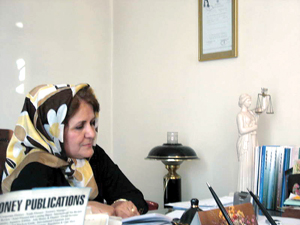

پذيرش > تریبون > گفت و گو > تاوان قانون نامناسب تابعیت را زن ایرانی می پردازد
 بهشید ارفع نیا: بهشید ارفع نیا:

 تاوان قانون نامناسب تابعیت را زن ایرانی می پردازد تاوان قانون نامناسب تابعیت را زن ایرانی می پردازد
3 آبان 1385 - گفتگو: فرناز سیفی - نسخه قابل چاپ
یکی از مهم ترین بحث های مطرح شده حوزه زنان در سالهای اخیر، بحث ازدواج زنان ایرانی با مردان غیر ایرانی و به ویژه افغانی و مشکلات بسیاری که این زنان و فرزندان آنها به آن دچار شده اند بوده است. دامنه و شدت این مسایل تا به آن جایی شدت یافت که مجلس شورای اسلامی را وا داشت تا ماده 976 قانون مدنی را بار دیگر مورد بررسی قرار دهد. سرانجام چندی پیش مجلس اعلام کرد که در این ماده، تغییراتی صورت داده است تا شرایط اخذ تابعیت برای کودکان زنان ایرانی تسهیل شود.اما تامل بیشتر بر تغییرات اعمال شده، حاکی از تضادها و شرایطی به مراتب دشوارتر است. دکتر بهشید ارفع نیا، حقوقدان و استاد دانشگاه شهید بهشتی و عضو اصلی بیست و چهارمین دوره « کانون وکلای دادگستری»، یکی از حقوقدانی است که از سالها قبل در کتاب ها و مقالات خود نسبت به مغشوش بودن این ماده تذکر داده و بر اصلاح این قانون تاکید ورزیده است.
اخیرا مجلس شورای اسلامی اعلام کرد که بندهایی از ماده 976 قانون مدنی را اصلاح کرده است. این قانون در چه سالی تصویب شد؟
ماده 976 مهم ترین ماده از شانزده ماده ای است که درباره تابعیت داریم. به جز شانزده ماده ذکر شده در قانون مدنی درباره موضوع تابعیت، در جای دیگری از قانون نیز در این باره صحبت نشده است. این ماده، هم به نوعی مهم ترین ماده است و هم ماده شلوغ و مغشوشی است. چرا که قانونگذار جمله را اینگونه آغاز کرده است که "افراد زیر تبعه ایران محسوب می شوند" و به دلیل این شروع نامناسب ناچار شده است موارد متعددی را در یک جمله ذکر کند. قانونگذار در این ماده هم اعطای تابعیت از طریق سیستم خون و سیستم خاک وهم تابعیت اکتسابی در اثر ازدواج یا لزوم شخص را گنجانده است. هیچ لزومی وجود نداشته که ماده را به این صورت وضع کنند. می شد این ماده را در پنج بند جدا از هم نوشت تا درباره هر یک تامل کافی صورت گیرد. به هر حال این ماده از هفت بند تشکیل شده است که بند یک آن یک سری اعمال های قانونی را مطرح کرده است. این بند می گوید هر فردی که در ایران زندگی می کند ایرانی محسوب می شود ، مگر اینکه دلایل مسلم بر غیر ایرانی بودن خود داشته باشد. این بند شاید برای زمانی که قانون را تصویب می کردند، یعنی سال هزار و سیصدو سیزده که جلد دوم قانون مدنی تصویب شد بند به جا ومعقولی بود. چرا که به هرحال تصویب این ماده بعد از قضیه کاپیتولاسیون بود که ایران حدود یک قرن به آن دچار بود؛ در آن هنگام ایران همچون خوان گسترده ای بود که اتباع خارجی از خود ایرانیان در ایران حقوق و مزایای بیشتری داشتند.اما امروز وجود این بند در ماده به نظر من خطرناک است و باید این بند از ماده حذف شود.
چرا در شرایط کنونی وجود این بند خطرناک به نظر می رسد؟
من اگر برای مثال افغانی بودم، خیلی ساده با استناد به این بند ثابت می کردم که ایرانی هستم. چرا که این افراد مدارک مسلم خارجی بودن ندارند و غالبا به عنوان پناهنده یا آواره جنگی وارد ایران شده اند و به راحتی با استناد به این بند می توانند ثابت کنند که ایرانی هستند. در حال حاضر به هیچ وجه وجود این بند لازم نیست. من درباره لزوم حذف این بند از ماده 976، نه تنها در کتاب خود نوشته و همواره در کلاس هایم بحث کرده ام، بلکه به مجلس شورای اسلامی نیز نامه نوشته ام، اما متاسفانه ترتيب اثري داده نشدهاست.
اشاره کردید که انتقال تابعیت از طریق سیستم خون و خاک هردو در ماده 976 ذکر شده است. شروط اخذ تابعیت از این دو طریق به چه صورت است؟
بند دوم این ماده درباره تابعیت مبدا که براساس سیستم خون از بدو تولد محاسبه می شود بحث می کند. این بند می گوید افرادی که پدری ایرانی دارند، چه در ایران چه خارج از ایران، از طریق سیستم خون دارای تابعیت ایران محسوب می شوند. اینجا به هیچ وجه به مادر اشاره ای نشده است، اگر مادر نیز ایرانی باشد که خوب مشکلی نیست. اگر مادر غیر ایرانی باشد بنا بر بند شش همین ماده از طریق ازدواج با مرد ایرانی به تابعیت ایرانی در می آید و باز مشکلی نیست.
بند سه، چهار و پنج این ماده سیستم خاک را بررسی می کند. در هر سه بند، تولد طفل در ایران شرط اصلی است. اما شرط دیگری نیز در هر یک از سه بند همراه شرط اصلی ذکر شده است. در بند سه، قانونگذار می گوید اگر پدر و مادر کودکی نامعلوم باشند، کودک دارای تابعیت ایرانی است. این شرط به دلیل حمایت از کودکانی که معلوم نیست پدر و مادر آنها چه کسانی هستند گنجانده شده است که امر بسیار خوب و لازمی هم است.در قوانین کشورهای بسیار دیگری هم چنین قانونی دیده می شود. بند چهارم می گوید فردی که در ایران متولد شده باشد و پدر یا مادر خارجی او نیز متولد ایران باشند، دارای تابعیت ایرانی است. در واقع قانونگذار در این بند نوعی همبستگی را پیش بینی کرده است و چنین بندی را در ماده گنجانده است. بند پنج نیز درباره کودکی صحبت می کند که از پدر و مادری خارجی در ایران متولد شده و تا هجده سالگی و یک سال پس از آن در ایران اقامت کرده باشد که چنین فردی نیز دارای تابعیت ایران است. در بند چهارم این ماده همواره این بحث مطرح بوده است که اگر ما به کودک مادر خارجی متولد ایران به صرف اینکه متولد ایران است تابعیت ایرانی می دهیم، آیا نباید به کودک مادر ایرانی هم که کودکش در ایران متولد شده است تابعیت ایران را دهیم؟ عقل، منطق و فکر سلیم حکم به آری می دهد. کما اینکه از سال 1353نیز این سوال از اداره حقوقی وزارت دادگستری می شد. تا سال پنجاه و سه دادگستری حکم می کرد که به طریق اولی و در مقایسه با بند چهار این ماده، به کودک مادر ایرانی نیز تابعیت ایرانی داده شود. سال پنجاه و سه به این فکر افتادندکه پا را تا حدی فراتر از قانون گذاشته اند، چرا که قانون ذکر کرده است مادر حتما باید در ایران به دنیا آمده باشد. و نظریه مشورتی اداره حقوقی وزارت دادگستری اعلام کرد که بچه متولد در ایران از مادر ایرانی را دارای تابعیت می دانیم که خود مادر نیز متولد ایران باشد. در واقع همان دو شرطی را که در بند چهارم برای مادر خارجی عنوان کرده است، برای مادر ایرانی نیز منظور کردند. بعد از انقلاب نیز در سال 1363 نظریه مشابه ای را اداره حقوقی وزارت دادگستری بار دیگر اعلام کرد و تاکید کرد که بچه ایرانی متولد از مادر ایرانی به شرطی دارای تابعیت ایرانی است که مادر نیز متولد ایران باشد.
در کل شرایط اخذ تابعیت ایران برای یک فرد غیر ایرانی به چه صورت است؟
ماده 979 قانون مدنی چهار شرط را برای اخذ تابعیت ایرانی منظور کرده است. اول اینکه فرد باید لااقل هجده سال تمام داشته باشد. دوم اینکه لااقل پنج سال در ایران زندگی کرده باشد. شرط سومی که قانونگذار مطرح کرده است عدم سو پیشنه و جرایم سیاسی و غیر سیاسی برای متقاضی تابعیت است و دست آخر اینکه متقاضی از خدمت نظام وظیفه فراری نبوده باشد. خوب! به جز شرط آخر- که آن هم برای کودکان حاصل از ازدواج زن ایرانی و مرد غیر ایرانی مصداق چندانی نداشته است- تمام این شروط همین حالا هم در ماده 976 از سالها قبل ذکر شده است. ضمن اینکه باز از ایرانی بودن مادر هیچ سود و بهره ای نصیب کودک نشده است و من نمی فهمم این همه سروصدای تبلیغاتی که مجلس ماده 976 را اصلاح کرد چیست! قانونگذار تاجی بر سر کسی نزده و چیزی را تغییر نداده است. در بند پنجم این ماده از سالها قبل امری مشابه پیش بینی شده بود و در ضمن شرایط اخذ تابعیت بعد از هجده سالگی برای فرد را نه تنها تسهیل نکرده که دشوارتر هم نمودند.
طبق قانون زن ایرانی در چه صورتی تابعیت ایرانی خود را از دست می دهد؟
ماده 987 قانون مدنی می گوید زن ایرانی که با مرد خارجی ازدواج می کند تابعیت ایرانی خود را حفظ می کند، مگر اینکه طبق قانون کشور شوهر، تابعیت آن کشور بر او تحمیل شود. اینجا حاکمیت ایران می گوید ازدواج این زن ایرانی که با مرد افغانی ازدواج کرده است قانونی نیست، چرا که از وزارت امور خارجه اجازه نگرفته است. اما نکته قابل توجه این است که اگر این ازدواج قانونی نیست، پس تغییر قانونی هم صورت نگرفته است.اگر دولت نتوانسته از مرزهای خود به خوبی پاسداری کند، این مساله پدر و مادر بی سواد روستایی که از فرط استیصال و فقر دختر کوچک خود را به مردی افغانی داده اند و هیچ هم از قانون و اجازه گرفتن از وزارت امور خارجه خبر ندارند نیست. وزارت امور خارجه برای فیصله دادن به این غائله بالاخره طرحی را به مجلس ارائه کرد که بچه های متولد از مادران ایرانی را با حذف شرطی که مادر نیز حتما متولد ایران باشد، تابعیت ایرانی دهید. یعنی یک تفاوت حداقلی بین اینکه مادر کودک ایرانی باشد یا غیر ایرانی را احساس کنیم. تیرماه بود که اعلام کردند این طرح را مجلس رد کرده است. تا بالاخره همین چند روز پیش شنیدیم که مجلس به کودکان مادر ایرانی و پدر غیر ایرانی که در ایران متولد شده اند، بعد از هجده سالگی تابعیت ایرانی می دهد که همان طور که گفتم هیچ چیز تازه ای نبود و از سالها قبل در همین ماده ذکر شده بود.
پس در واقع در بحث تابعیت، ایرانی بودن مادر امتیازی محسوب نمی شود.
نه تنها امتیاز مثبتی در نظر گرفته نمی شود، حتا به نظر می رسد به عنوان امتیازی منفی هم محسوب می شود! من موردی داشتم که دختر در خانواده ای که پدر هندی و مادر ایرانی بود متولد شده بود. دختر هجده ساله و برادرش بیست و پنج ساله بود. پسر در لندن زندگی می کرد و زمانی که وقت تعویض شناسنامه ها شد، پسر از طریق سفارت در لندن شناسنامه خود را تعویض کرد و هیچ مشکلی هم پیش نیامد. روزی که پدر دختر برای دریافت شناسنامه او به اداره ثبت احوال رفت، مامور می پرسد شما اهل کجا هستید و پدر جواب می دهد که هندی است.مامور ثبت احوال شناسنامه دختر را از پدرش پس گرفته و می گوید که این شناسنامه باطل می شود. شما تا به حال شنیده اید که فردی زنده باشد و شناسنامه او را باطل کنند؟وقتی به من وکالت دادند، به اداره ثبت احوال رفتم و دیدم ابلاغی قانونی از ان نوعی کرده اند که ما وکلا به این نوع ابلاغ ها می گوییم « ابلاغ داخل جوی.» از آن دست ابلاغ هایی که می خواهند به دست فرد مورد نظر نرسد. ابلاغی که اصلا به نشانی این خانواده نیست و اعلام کرده اند ظرف ده روز می توانید بیایید تا به تصمیمی که برای مورد شما گرفته شده است اعتراض کنید. وقتی هم در حقیقت به اینها ابلاغی نشده است ، طبیعتا شکایتی هم نکرده اند و ثبت احوال یک طرفه شناسنامه دختر را باطل کرده بود.این سوال مطرح می شود که قانون شناسنامه ای را حالا بجا یا بی جا برای فردی صادر کرده است و این دختر هجده سال با این شناسنامه زندگی کرده است، برادر این دختر با شرایطی مساوی شناسنامه اش بی دردسر صادر شده است و هیچ مشکلی هم پیش نیامده است، چطور به خود اجازه می دهید شناسنامه دختر هجده ای ساله ای را باطل کنید که زنده است و سالها با همین شناسنامه صادره خودتان زندگی کرده است؟ قرارداد 1930لاهه می گوید کشورها نباید اجازه دهند هیچ فردی بی تابعیت باشد و آنوقت ما اینگونه فردی را بی تابعیت می کنیم. در حالی که من دیده بودم که شناسنامه هایی که برای این افراد که از پدر غیر ایرانی متولد شده بودند صادر می شد، در بالای صفحه اول عبارت «در اجرای بند چهار ماده نهصد و هفتاد و شش» نوشته می شد. در حقیقت بر مبنای همان چیزی که اداره حقوقی وزارت دادگستری نظر داده بود، این شناسنامه ها صادر می شد و تا زمانی هم که این قانون اصلاح نشده است، همین شیوه باید ادامه پیدا می کرد.
چند روز پیش دولت بحرین برای اولین بار اعلام کرد که به کودکان زنان بحرینی که با مردان غیر بحرینی ازدواج کرده اند تابعیت بحرینی خواهد داد. وضعیت دیگر کشورهای منطقه در بحث اخذ تابعیت از مادر به چه صورت است؟
من در کتاب خود مقایسه تطبیقی میان قانون ایران و دیگر کشورهای مسلمان منطقه انجام دادم. متاسفانه سایر کشورهای منطقه نیز با کمی تفاوت، وضعیت مشابه ای دارند. برای مثال اگر در ایران قید حداقل پنج سال زندگی در ایران برای اخذ تابعیت ایرانی ذکر شده است، در عراق این میزان ده سال است. ضمن اینکه در تمام کشورهای منطقه، کماکان بحث انتقال تابعیت از طریق سیستم خاک مود بحث است و برخلاف بسیاری کشورهایی که حقوق مساوی زن و مرد رابه رسمیت شناخته اند، هنوز هیچ صحبتی از انتقال تابعیت از طریق خون مطرح نیست.
آیا زنان ایرانی که با مردان غیر ایرانی و عمدتا افغانی ازدواج کرده و دچار چنین وضعیت مغشوشی شده اند، می توانند به نهادهای بین المللی شکایت کنند؟
بله. این افراد حق دارند به عنوان اتباع ایرانی که دولتشان از آنها حمایت نمی کند، به مراجع ذی صلاح بین المللی شکایت کنند. دولت ها وظیفه دارند از اتباع خود حمایت های لازم و کافی کنند. آیا زن ایرانی که با مرد افغانی ازدواج کرده است مرتکب گناه کبیره شده است؟ مدام از تلویزیون اصول راهنمایی و رانندگی آموزش داده می شود که بسیار هم خوب است، اما چرا یک بار آموزش نمی دهید که زن ایرانی اگر بخواهد با مرد غیرایرانی ازدواج کند باید از وزارت امورخارجه اجازه گیرد؟ چرا پیشگیری نمی کنید تا این زنان در چاه ویل نیفتند و بعد هم هیچ حمایتی از آنها به عمل نیاید؟ مرد افغانی که به ایران آمده است، دلیلش جنگ و آوارگی و عدم کنترل دولت ایران بر مرزهایش بوده است.اگر دولت در زمینه کنترل مرزها ضعیف عمل می کند، تاوانش را زنان ایرانی باید دهند؟ حالا هم که با تصویب این قانون تازه انگار بچه اصلا از پدر متولد می شود و اصلا مادر هم ندارد و مهم هم نیست مادر این کودک چه کسی است! من متاسفم که تاوان همه چیز را تنها زن ایرانی است که باید بپردازد و بس.
این گفتگو قبل از انتشار در سايت تغيير براي برابري در صفحه زنان روزنامه سرمایه، به چاپ رسیده است.
ارسال به
بالاترین
،
توییتر
،
فریندفید
،
فیسبوک
در همين بخش :
 دهمین دورۀ مراسم تندیس صدیقه دولت آبادی ۱۳۹۲ دهمین دورۀ مراسم تندیس صدیقه دولت آبادی ۱۳۹۲
کارت پستالهایی به بهانهی هشت مارس و به یاد همهی مبارزین راه برابری
بیانیه بیش از 350 تن از مدافعان حقوق زنان به مناسبت روز جهانی زن؛ زنان هر روز فرودستتر میشوند
لباسی که برای تن ما دوخته اند! /اعظم بهرامی
چالشها و چشمانداز فعالیت مدنی زنان
ديگر بخش ها :
طرح یک میلیون امضا
|
مقالات
|
سایت نوشته ها
|
اخبار
|
گزارش كمپين
|
گفت و گو
|
علیه سکوت
|
كوچه به كوچه
|
نامه های شما
|
گزارش ویژه
|
گفتگو با اعضا
|
ویژه سالگرد کمپین
|
تصویر برابری
|
دل آرام علی
|
تریبون
|
مقالات
|
تاریخ شفاهی
|
خارج از چارچوب
|
کتابخانه
|
درباره کمپین
|
کمپین در شهرها
|
کمپین در بند
|
صدای تغییر
|
ویژه 22 خرداد
|
لایحه حمایت از خانواده
|
گالری
|
عشا مومنی
|
امیر یعقوبعلی
|
خدیجه مقدم
|
راحله عسگری زاده و نسیم خسروی
|
پروین اردلان،جلوه جواهری، مریم حسین خواه، ناهید کشاورز
|
زینب پیغمبرزاده
|
سعیده امین، سارا ایمانیان، محبوبه حسین زاده، ناهید کشاورز و همایون نامی
|
احترام شادفر
|
نسیم سرابندی زاده،فاطمه دهدشتی
|
وبلاگ مهمان
|
پرونده خرم آباد
|
دستگیری ها
|
مریم مالک
|
پرستو اللهیاری
|
مهرنوش اعتمادی
|
سمیه رشیدی
|
Other Languages
|
همراهان
|
«فراخوان کمپین ده روز با بهاره هدایت»
| English
|